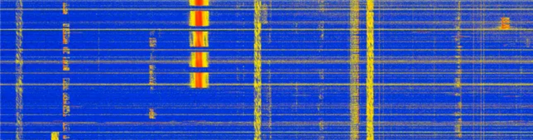

Green = visible, Red = might be hidden
This page verifies that the selection border is fully visible on all four sides of a selected table row.
outline instead of border for selectionz-index to ensure selected row is above others|  | |
| time-start | 0 |
| time-end | 60 |
| freq-start | 0 |
| freq-end | 20000 |